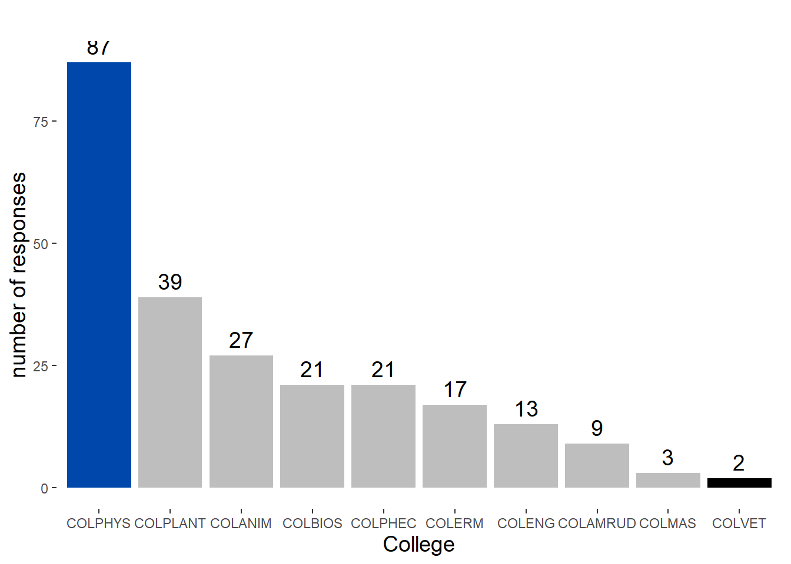
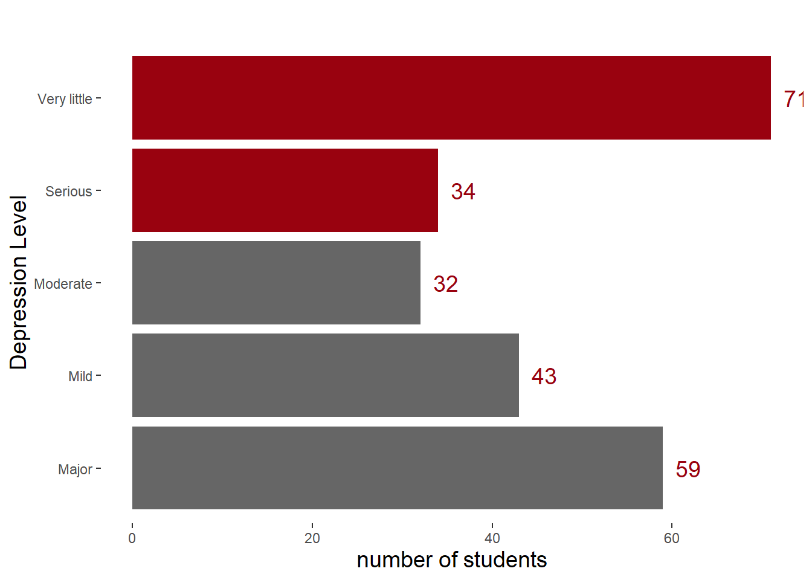
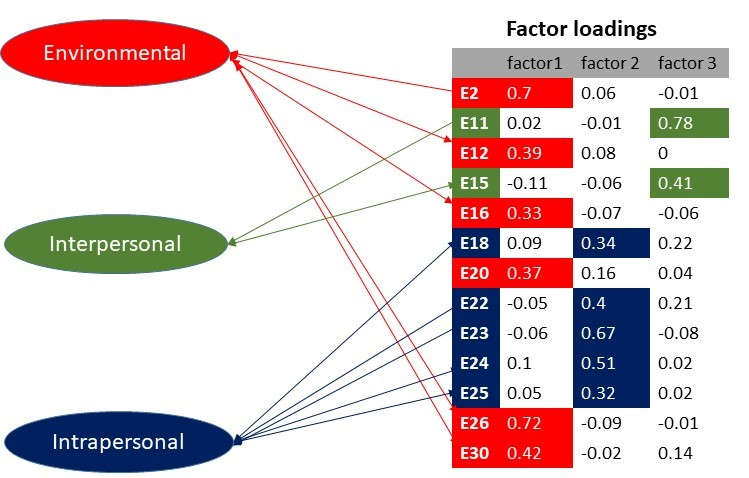

Depression and its Effect on FUNAAB student Academic Performance
Introduction
Depression prevalence varies among undergraduate students of different countries and cultures and is influenced by socio-demographics, interpersonal, intra-personal and environmental factors. This study aim to understand the state of depression and its effect on FUNAAB student’s academic performance.
Project Goals
The aim of this work is to explore the level of depression among undergraduates and its effect on their academic performance and also provide a simple guide on how to develop and use R shiny and Quarto application. Specifically, we aim to investigate:
The amount and causes of depression
The most significant factor using E.F.A and its effect on academic performance
Check the effect of depression, sex and gender on academic performance with ordinal Logistic regression
Build an interactive website using Quarto and R shiny to predict student academic performance and also educate the university community and the world.
Population of Study
Federal University of Agriculture Abeokuta (FUNAAB)
One of the three specialized Universities of Agriculture in Nigeria. It was established on January 1, 1988 with the triple mandate of teaching, research and extension (knowledge and technology transfer). Its covers a total land Area of about 10,000 hectares located in Odeda Local Government Abeokuta, Capital of Ogun State, Nigeria.
Data
A depression assssment questionaire was designed with Google forms and was distributed via social media to different college students, student leaders and unions, a total of 246 response was received, the data was stratified by gender and sample size of 100 was randomly selected. The information contained in the data includes socio demographic information, cgp, cgpa, sex, stress score, stress level e.t.c.
Data Preparation (cleaning)
We begin by loading the raw data into R and performing some pre processing steps to prepare the data for analysis. First, we rename columns in the data set using the rename() function. Then, we reverse code likert items, convert columns to appropriate data types and other necessary data engineering techniques was applied before writing the clean data to file in a c.s.v. format. Click this link to access the data cleaning R script.
Socio Demographic Statistics
Here we load the required packages by creating custom function using lapply for loading multiple names of packages created with c()
Data Summary
| Name | df |
| Number of rows | 239 |
| Number of columns | 12 |
| _______________________ | |
| Column type frequency: | |
| factor | 10 |
| numeric | 2 |
| ________________________ | |
| Group variables | None |
Variable type: factor
| skim_variable | n_missing | complete_rate | ordered | n_unique | top_counts |
|---|---|---|---|---|---|
| age | 0 | 1 | FALSE | 3 | 18 : 165, 24 : 72, 30 : 2 |
| gender | 0 | 1 | FALSE | 2 | Mal: 135, Fem: 104 |
| college | 0 | 1 | FALSE | 10 | COL: 87, COL: 39, COL: 27, COL: 21 |
| department | 0 | 1 | FALSE | 35 | STS: 33, CPT: 18, CSC: 18, CHM: 15 |
| religion | 0 | 1 | FALSE | 3 | Chr: 202, Isl: 36, Oth: 1 |
| G.P.A | 0 | 1 | FALSE | 4 | 3.5: 125, 2.5: 71, 4.5: 35, 1.5: 8 |
| C.G.P | 0 | 1 | FALSE | 4 | 3.5: 116, 2.5: 92, 4.5: 23, 1.5: 8 |
| status | 0 | 1 | FALSE | 3 | Sin: 235, Coh: 2, Mar: 2 |
| sponsor | 0 | 1 | FALSE | 4 | Par: 208, Sel: 13, Gua: 12, Oth: 6 |
| stress_level | 0 | 1 | FALSE | 5 | Ver: 71, Maj: 59, Mil: 43, Ser: 34 |
Variable type: numeric
| skim_variable | n_missing | complete_rate | mean | sd | p0 | p25 | p50 | p75 | p100 | hist |
|---|---|---|---|---|---|---|---|---|---|---|
| level | 0 | 1 | 298.74 | 113.20 | 100 | 200 | 300 | 400.0 | 600 | ▇▇▇▂▁ |
| stress_score | 0 | 1 | 222.02 | 108.93 | 0 | 137 | 208 | 297.5 | 513 | ▃▇▆▃▁ |
Distribution of response
We proceed by exploring the distribution of response, counting and visualizing the number of response from each college and department of study.
Code
# Distribution of response by college
coll <-count(df,college)
plot1 <- ggplot(coll,aes(reorder(college, -n), y = n)) +
geom_bar( stat = "identity", fill = c(rep("grey",7),"#0047AB","grey","black")) +
geom_text(aes(label = n), vjust = -0.5, color = "black" , size = 5) +
labs(
subtitle ="",
x = "College", y = "number of responses")
ptheme <-theme(
panel.background = element_blank(),
plot.title = element_text(hjust = 0.5, size = 20),
plot.subtitle = element_text(hjust = 0.5, size = 16),
axis.title.x = element_text(size = 14),
axis.title.y = element_text(size = 14)
)
# count the category of each department
department <- count(df,department)
plot2 <-ggplot(department,aes(reorder(department, n), y = n)) +
geom_col(fill = c(rep("grey",9),"#0047AB",rep("grey",22),"#99020f","#0047AB","grey")) +
geom_text(aes(label = n), hjust = -0.5, color = "black", size = 3) +
labs(title = "",
subtitle = " Statistics department had 14% response",
x = "deprtment", y = "number of responses")
# display the plot
plot1+ptheme

Depression level
Code
# Measuring the level of student depression
lvl <-count(df,stress_level)
plot2 <-ggplot(lvl,aes(x = stress_level, y = n)) +
geom_bar( stat = "identity", fill = c(rep("#666666",2),"#666666",rep("#99020f",2))) +
geom_text(aes(label = n), hjust = -0.5, color = "#99020f" , size = 5) +
labs(
subtitle ="",
x = "Depression Level", y = "number of students") +
theme(
panel.background = element_blank(),
plot.title = element_text(hjust = 0.5, size = 20),
plot.subtitle = element_text(hjust = 0.5, size = 16),
axis.title.x = element_text(size = 14),
axis.title.y = element_text(size = 14)
) + coord_flip()
plot2
| Very little | Mild | Moderate | Serious | Major | |
| Female | 30 | 14 | 13 | 16 | 31 |
| Male | 41 | 29 | 19 | 18 | 28 |
Exploratory Factor Analysis
Exploratory factor analysis (EFA) was used to determine the common variance among the measured variables that can be attributed to a latent construct or factor. This helps to describe the data and identify underlying factors, this is the first step used to explore and reduce the number of variables into three group of factors namely interpersonal factor, interpersonal factor and environmental factor. 
Ordinal Logistic Regression
An ordered logistic regression model was employed to examine the relationship between students’ G.P.A and several factors, including gender, depression level, interpersonal factors, and environmental stress. Prior to analyzing the data, we loaded the necessary packages and imported the dataset. Next, we redefined the levels of the categorical factors. To ensure randomness, we created a randomized copy of the data and drew a sample of 100 males and 100 females. Subsequently, we combined the two samples into a single dataset. From this combined dataset, we selected the variables of interest. To assess model performance, we split the data into a training set (80% of the data) and a test set (20% of the data). The model was trained using the training set, and its performance was evaluated using the test set.
Code
Loading required package: caToolsWarning: package 'caTools' was built under R version 4.2.3Loading required package: MetricsWarning: package 'Metrics' was built under R version 4.2.3
Attaching package: 'Metrics'The following object is masked from 'package:rcompanion':
accuracyLoading required package: gtableWarning: package 'gtable' was built under R version 4.2.3[[1]]
[1] TRUE
[[2]]
[1] TRUE
[[3]]
[1] TRUE
[[4]]
[1] TRUE
[[5]]
[1] TRUE
[[6]]
[1] TRUE
[[7]]
[1] TRUE
[[8]]
[1] TRUECode
# Import data
ordiDf <- read.csv("dataset/Ordinal.csv",stringsAsFactors = TRUE)
# prepare a randomize copy of the data
ordiDf <- ordiDf[sample(nrow(ordiDf)), ]
# defiined factor levels
ordiDf$f2 <- factor(ordiDf$f2,levels = c("Not Applicable",
"Strongly Agree",
"Agree","Neutral",
"Disagree",
"Strongly Disagree"), ordered = TRUE)
ordiDf$f3 <- factor(ordiDf$f3,levels = c("Not Applicable",
"Strongly Agree",
"Agree","Neutral",
"Disagree",
"Strongly Disagree"), ordered = TRUE)
ordiDf$f1 <- factor(ordiDf$f1,levels = c("Not Applicable",
"Strongly Agree",
"Agree","Neutral",
"Disagree",
"Strongly Disagree"), ordered = TRUE)
# Draw 100 samples each of male and female
male_samples <- ordiDf %>%
filter(gender == "Male") %>%
sample_n(90, replace = FALSE)
female_samples <- ordiDf %>%
filter(gender == "Female") %>%
sample_n(90, replace = FALSE)
# Combine the male and female samples
combined_samples <- rbind(male_samples, female_samples)
# prepare a randomize copy of the data
combined_samples <- combined_samples[sample(nrow(combined_samples)), ]
# Print the combined samples
View(combined_samples)
new_sample <- combined_samples[,-c(1,2)]
new_sample <- dplyr::select(new_sample,gender,C.G.P,stress,f1,f2,f3)
View(new_sample)
#Splitting the data
split = sample.split(new_sample$C.G.P, SplitRatio = 0.8)
train_set = subset(new_sample, split == TRUE)
test_set = subset(new_sample, split == FALSE)
#Write new files for the train and test sets
write.csv(train_set, "train.csv", row.names = FALSE)
write.csv(test_set, "test.csv", row.names = FALSE)
# test of goodness
#chisq.test(df$C.G.P,unlist(predict(model1))
#Ordinal Logistic Regression
#model
model <- clm(C.G.P ~ ., data = train_set, link = "logit")
# Performance Metrics
# Predicting the test values
y_pred_m <- predict(model, newdata = test_set, type = "class")
ctab <- table(y_pred_m$fit, test_set$C.G.P)
# correctly classified predictions
(CCR <- sum(diag(ctab)) / sum(ctab))[1] 0.5555556Code
# mean prediction error (proportion of mismatched predictions based on the C.G.P in the train set)
mpe <-mean(as.character(test_set$C.G.P) != as.character(y_pred_m$fit))
#Saving the model
saveRDS(model, file = "./model.rda")
# Save the CCR
saveRDS(CCR, file = "./CCR.rda")
# Save the mpe
saveRDS(mpe, file = "./mpe.rda")Model summary
The results of the model suggest that gender does not have a statistically significant impact on students’ G.P.A, as indicated by the coefficient estimate for genderMale (-0.215584, p-value: 0.5408). Among the stress levels, only stressMild showed a marginally significant negative association with G.P.A, with an estimated coefficient of -0.911112 (p-value: 0.1004).
The threshold coefficients represent the cutoff points that differentiate different classes of G.P.A. For instance, the threshold between “First class” and “Second class” is estimated to be -2.3383, while the threshold between “Second class” and “Second class lower” is 0.4869. Additionally, the threshold between “Second class lower” and “Third class” is estimated to be 4.1911.
Here is an interpretation of the effect of each predictor based on the provided coefficient estimates:
genderMale: The coefficient estimate of -0.215584 suggests that being male is associated with a slight decrease in the odds of having a higher C.G.P, but the effect is not statistically significant (p-value: 0.5408). In other words, gender does not have a significant impact on the students’ G.P.A.
stressMild: The coefficient estimate of -0.911112 indicates that experiencing mild stress is associated with a decrease in the odds of having a higher C.G.P. However, the effect is only marginally significant (p-value: 0.1004), suggesting that the relationship between mild stress and G.P.A needs further investigation.
stressModerate: The coefficient estimate of -0.153460 suggests that moderate stress does not have a significant impact on students’ G.P.A, as the effect is not statistically significant (p-value: 0.7855).
stressSerious: The coefficient estimate of 0.418785 indicates that experiencing serious stress does not have a statistically significant effect on students’ G.P.A (p-value: 0.4744).
stressVery little: The coefficient estimate of -0.207082 suggests that experiencing very little stress does not have a significant impact on G.P.A, as the effect is not statistically significant (p-value: 0.7320).
f1, f2, f3 (categorical factors): The coefficient estimates for the different levels of these factors (f1.L, f1.Q, f1.C, f1^4, f1^5, f2.L, f2.Q, f2.C, f2^4, f3.L, f3.Q, f3.C, f3^4, f3^5) indicate the relationship between each level of the factors and G.P.A. However, none of these coefficients are statistically significant, suggesting that these factors do not have a significant impact on G.P.A. and may need further investigation.
Overall, the coefficient estimates provide insights into the relationships between the predictor variables (stress and gender) and the log-odds of the ordinal response variable (C.G.P). However, it’s important to consider statistical significance when interpreting the coefficients. In this case, the p-value is 0.2235, suggesting that the difference is not statistically significant at a conventional significance level (e.g., 0.05).
However several model was trained with different factors combinations and their prediction performance record as below
model1 with f1, f2 and f3 predicts 50% C.G.P correctly
model2 with stress predict 41% C.G.P correctly
model3 with f1, f2 ,f3 and stress predicts C.G.P 41% correctly
model4 with f1, f2 ,f3, stress and gender predicts C.G.P 41% correctly
model5with f1, f2 ,f3 and gender predicts 47% C.G.P correctly
model6 with f2 predict 48% C.G.P correctly
model7 with f1 predicts 41% C.G.P correctly
model8 with f3 predicts 47% C.G.P correctly
The best model in this case is model 1 with 0.5 error classification rate
Conclusion
This finding supports the notion that model1 captures important patterns and dependencies between the predictor variables and the response variable also having the least prediction error rate which indicates strong evidence against the null hypothesis of no association. Therefore, we can reject the null hypothesis and conclude that there is a significant relationship between the observed and predicted values of the response variable.
We also see that the study reveals the following
-
Stress Levels:
Individuals with a mild stress level have lower odds of the response variable compared to the reference category.
Moderate and very little stress levels do not show significant evidence of a difference in odds.
Individuals with a serious stress level have slightly higher odds of the response variable, although not statistically significant.
-
Gender:
- Being male is associated with slightly lower odds of the response variable, but it is not statistically significant.
-
Thresholds:
The odds of transitioning from the first class to the second class are very low.
The odds of transitioning from the second class to the second class lower are relatively high.
The odds of transitioning from the second class lower to the third class are significantly higher.
The R Shiny Quarto Website
R Shiny
Shiny is an R package that makes it easy to build Interactive web applications (apps) straight from R without using any web application language such as HTML, CSS, or JavaScript knowledge.
To install the R package, open an R session, connect to the internet and run.
install.packages("shiny")
Shiny apps are contained in a single script called app.R. The script lives in a directory (for example, newdir/ and the app can be run with runApp("newdir") . app,R has three components:
• a user interface object : controls the layout and appearance of the app
# Define UI for the Dashboard tab in the Quarto website
• a server function : contains instructions that your computer needs to build your app.
# Define serer logic required to build charts and models
• a call to the shinyApp function : create shinyApp app object from an explicit UI.sever pair.
3.9.2 Quarto Website
Quarto R package is an open source scientific and technical publishing system used to :
• Share knowledge and insights by publishing
• Publish reproducible, production quality articles, presentations, websites, blogs and books in HTML,PDF,MS Word, ePub, and more.
• Write using Pandoc markdown, including equations, citations,crossrefs, figure panels,callouts, advance layout and more.
Quarto Websites are a convenient way to publish groups of documents. Documents published as part of a website share navigational elements, rendering options, and visual style. It can be published to a wide variety of destinations including GitHub Pages, Netlify, Posit Connect, or any other static hosting service or intranet web server.
• To create a new website project within RStudio, use the New Project command and select Quarto Website:
• Then, provide a directory name and other relevant options for the website: e.g `Survey-Project`
• Every website has a _quarto.yml config file that provides website options as well as defaults for HTML documents created within the site. For example, here is the default config file for the this research work;
project:
type: website
website:
title: “Bsc Project”
page-footer:
center: |
<span class=“container”><strong>Application built by [Victor Arowolo](mailto:iamvictorthrive@gmail.com){target=“_blank”}</strong></span>
left: |
<span class=“container”><strong>Made with [Posit Quarto](https://quarto.org/){target=“_blank”}</strong></span>
right: |
<span class=“container”><strong>[Github Repo](https://github.com/){target=“_blank”}</strong></span>
background: “#474747”
navbar:
background: “#474747”
foreground: “white”
search: false
left:
- text: “Home”
file: index.qmd
- text: “Introduction”
file: introduction.qmd
- text: “Dashboard”
file: dashboard.qmd
- text: “About Supervisor”
file: about supervisor.qmd
- text: “About me”
file: about me.qmd
- text: “Project Documentation”
file: documentation.qmd
right:
- icon: whatsapp
href: https://whatsapp.com
- icon: twitter
href: https://twitter.com/Thrive_001?t=pBpBmsHHMreN2Bj-ulKo7w&
- icon: github
href: https://github.com
- icon: linkedin
href: https://www.linkedin.com/in/victor-arowolo-472010219
format:
html:
theme:
light: [cosmo, theme_light_custom.scss]
dark: [cosmo, theme_dark_custom.scss]
css: styles.css
citations-hover: true
code-link: true
code-fold: show
code-tools: false
code-block-border-left: “#004E4F”
• Click the Render button to render and preview the website:
This is the output below
Top of Form
The R Shiny Quarto Website
3.9.1 R Shiny
Shiny is an R package that makes it easy to build Interactive web applications (apps) straight from R without using any web application language such as HTML, CSS, or JavaScript knowledge.
To install the R package, open an R session, connect to the internet and run.
install.packages(“shiny”)
Shiny apps are contained in a single script called app.R. The script lives in a directory (for example, newdir/ and the app can be run with runApp(“newdir”). app,R has three components:
• a user interface object : controls the layout and appearance of the app
# Define UI for the Dashboard tab in the Quarto website
• a server function : contains instructions that your computer needs to build your app.
# Define serer logic required to build charts and models
• a call to the shinyApp function : create shinyApp app object from an explicit UI.sever pair.
library(shiny)
@ See above for the definitions of ui and server
ui <- ...
server <- ...
shinyApp(ui = ui, server = server)
You can run the app by giving the name of its directory to the function runApp
library(shiny)
runApp(“app,R”)
3.9.2 Quarto Website
Quarto R package is an open source scientific and technical publishing system used to :
• Share knowledge and insights by publishing
• Publish reproducible, production quality articles, presentations, websites, blogs and books in HTML,PDF,MS Word, ePub, and more.
• Write using Pandoc markdown, including equations, citations,crossrefs, figure panels,callouts, advance layout and more.
Quarto Websites are a convenient way to publish groups of documents. Documents published as part of a website share navigational elements, rendering options, and visual style. It can be published to a wide variety of destinations including GitHub Pages, Netlify, Posit Connect, or any other static hosting service or intranet web server.
• To create a new website project within RStudio, use the New Project command and select Quarto Website:
• Then, provide a directory name and other relevant options for the website: e.g `Survey-Project`
• Every website has a _quarto.yml config file that provides website options as well as defaults for HTML documents created within the site. For example, here is the default config file for the this research work;
project:
type: website
website:
title: “Bsc Project”
page-footer:
center: |
<span class=“container”><strong>Application built by [Victor Arowolo](mailto:iamvictorthrive@gmail.com){target=“_blank”}</strong></span>
left: |
<span class=“container”><strong>Made with [Posit Quarto](https://quarto.org/){target=“_blank”}</strong></span>
right: |
<span class=“container”><strong>[Github Repo](https://github.com/){target=“_blank”}</strong></span>
background: “#474747”
navbar:
background: “#474747”
foreground: “white”
search: false
left:
- text: “Home”
file: index.qmd
- text: “Introduction”
file: introduction.qmd
- text: “Dashboard”
file: dashboard.qmd
- text: “About Supervisor”
file: about supervisor.qmd
- text: “About me”
file: about me.qmd
- text: “Project Documentation”
file: documentation.qmd
right:
- icon: whatsapp
href: https://whatsapp.com
- icon: twitter
href: https://twitter.com/Thrive_001?t=pBpBmsHHMreN2Bj-ulKo7w&
- icon: github
href: https://github.com
- icon: linkedin
href: https://www.linkedin.com/in/victor-arowolo-472010219
format:
html:
theme:
light: [cosmo, theme_light_custom.scss]
dark: [cosmo, theme_dark_custom.scss]
css: styles.css
citations-hover: true
code-link: true
code-fold: show
code-tools: false
code-block-border-left: “#004E4F”
• Click the Render button to render and preview the website:
This is the output below
Top of Form
Future Work
Possible future work for this project includes:
Investigating the effects of other mental health disorders on academic performance
Exploring the impact of academic performance on mental health
Conducting a longitudinal study to track changes in depression symptoms and academic performance over time
Sidenote
To find all the R codes and datasets, visit my GitHub repository. Additionally, in my ShinnyApp can be found the R shiny application.